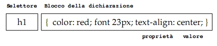
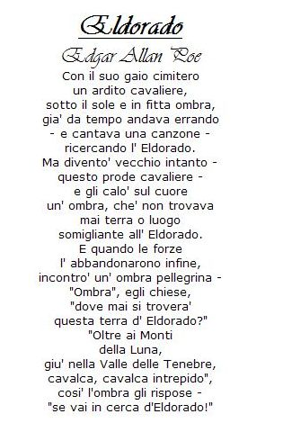

Torna alla pagina di Tecnologie Web
:: Tecnologie Web ::
CSS
Introduzione
CSS(Cascading Stylesheets) è un linguaggio che permette di descrivere l'aspetto dei documenti XHTML, XML e di conseguenza delle pagine web.
CSS non prevede alcuna trasformazione e i dati di tipo carattere sottoposti a parsing vengono presentati così come appaiono nel documento XML; inoltre non modifica il markup del documento, ma applica regole al markup già presente.
Il motivo per cui si utilizza CSS è la possibilità di separare i contenuti dalla presentazione e quindi ottenere:
- maggiore leggibilità del codice
- facilità nella manutenzione
- personalizzazione dell'output
Versioni
Ci sono tre versioni differenti di CSS:
- CSS Level1: la prima raccomandazione del W3C del 1996 utilizzata solo per HTML
- CSS Level2: è la raccomandazione corrente ed è utilizzata per HTML e XML. Con XML funziona in modo migliore, in quanto in XML non ci sono semantiche di visualizzazione predefinite.
- CSS Level3: versione attualmente in lavorazione che ha lo scopo di gestire le specifiche CSS in maniera modulare, così da poter implementare solo le funzionalità necessarie al nostro documento e non tutte.
Sintassi
Un foglio di stile CSS è semplicemente un elenco di elementi ai quali devono essere applicati degli stili, che riguardano ad esempio il carattere, i colori e la formattazione. In un foglio di stile possono essere inseriti commenti tramite /* */ e gli spazi vuoti per migliorare la leggibilità del codice CSS in quanto non vengono interpretati in alcun modo.
In un foglio di stile CSS è possibile definire all'inizio del documento una sorta di stile default che viene applicato a tutti gli elementi all'interno dell'albero, appunto a cascata. Questo significa che non è necessario definire uno stile per tutti gli elementi, perché questi ereditano lo stile degli elementi superiori o le impostazioni di default.
Associazione CSS a documenti XML
I fogli di stile CSS sono utili soprattutto per le pagine web e per fare in modo che il browser rintracci il file CSS bisogna applicare al prologo di XML l'istruzione di elaborazione xml-stylesheet. Questa istruzione deve essere associata a due pseudo-attributi:
- type:"text/css"
- href="nome_file.css"
Esempio:
<?xml-stylesheet type="text/css" href="Trucco.css"?>
I due attributi appena visti sono obbligatori, però in totale sono 6:
- type: il tipo MIME del foglio di stile. text/css per CSS e text/xml per XSLT.
- href: l'URL assoluto o relativo al quale può essere rintracciato il foglio di stile.
- charset: nome del set di caratteri con cui è stato scritto il foglio di stile. Da notare che può essere diverso dal set di caratteri utilizzato nel documento da formattare.
- title: indica il nome del foglio di stile.
- media: specifica a quali tipi di media deve essere applicato il foglio di stile e può assumere i seguenti valori: screen, tty, tv, projection, handheld, print, braille, aural, all.
Se nel documento XML inseriamo più dichiarazioni di elaborazione xml-stylesheet possiamo rendere il documento visibile su più piattaforme in quanto possiamo associare ogni dichiarazione ad un diverso foglio di stile e ad un diverso media.
- alternate: se assume il valore yes significa che il foglio di stile è alternativo e normalmente non viene utilizzato. Se invece assume il valore no significa che è un foglio di stile primario e quindi deve essere utilizzato. Il valore di default è no.
Regole
Un foglio di stile è costituito dalle seguenti regole:
- selettore: può essere un qualsiasi tag o un insieme di tag.
- blocco della dichiarazione: contiene tra parentesi graffe l'insieme delle proprietà di formattazione da applicare al selettore.
- proprietà: definisce una delle caratteristiche di formattazione supportate dal browser.
- valore: specifica il valore di una proprietà.
Esempio:

Selettori
CSS mette a disposizione alcuni selettori che permettono appunto di selezionare determinati elementi al posto di altri:
- Selettore Universale: *{font-size:large;}
Il carattere asterisco corrisponde a qualsiasi elemento, quindi la regola viene applicata a qualsiasi elemento del documento che non sia associato a una regola più specifica.
Nell'esempio tutti gli elemento del documento devono utilizzare un carattere large.
- Selettori Raggruppati: h1, h2, h3{background:white;}
La regola viene applicata a tutti gli elementi elencati.
- Selettori per Elemento Discendente: p strong{color:red;}
La regola generale dice che un nome di elemento A seguito da un nome di elemento B trova una corrispondenza in tutti gli elementi B che discendono dagli elementi A.
La regola dell'esempio quindi trova una corrispondenza negli elementi strong che risultano essere discendenti degli elementi p, ma non in quelli che appaiono in qualunque altro punto del documento.
- Selettori per Elemento Figlio: p > strong{color:red;}
La regola dice che se abbiamo due elementi separati da >, allora il secondo elemento deve essere un figlio diretto del primo elemento.
Nell'esempio quindi a strong viene applicato il colore rosso solo se è figlio diretto di p.
- Selettori per Elemento Adiacente: h1 + p{margin: 10px;}
La regola dice che se abbiamo due elementi separati da un +, allora il secondo elemento deve essere esattamente l'elemento successivo rispetto al primo elemento.
Nell'esempio quindi il margine di 10pixel viene applicato solo al primo p successivo ad h1.
- Selettori per Attributo:
*[lang=fr]{display:none;} a[rel~="copyright"]{color:red;}
Nelle parentesi quadre abbiamo il nome di un attributo o un valore di attributo.
Nel primo esempio la regola nasconde tutti gli elementi che sono in francese indipendentemente dal loro tipo.
Nel secondo esempio la regola scrive in rosso gli elementi a che hanno come valore dell'attributo rel copyright.
Proprietà display
La proprietà display identifica come deve essere disposto l'elemento nella sua tonalità all'interno della pagina. Esistono 18 valori legali per questa proprietà, ne vediamo alcuni:
- Elementi inline: display:inline
è il valore di default della proprietà e posiziona l'elemento nella prossima posizione disponibile. La direzione di spostamento varia in base alla lingua utilizzata, quindi nel nostro caso da sinistra verso destra, mentre per il Cinese tradizionale dall'alto verso il basso.
- Elementi blocco: display:block
l'elemento viene separato dai propri fratelli con un ritorno a capo.
- Elementi lista: display: list-item
L'elemento viene formattato come elemento di livello blocco, ma gli viene applicato un bullet all'inizio del blocco. Il bullet è personalizzabile tramite le proprietà list-style-type, list-style-image, list-style-position.
- Elementi nascosti: display:none
L'elemento non viene incluso nel documento e non modifica la formattazione degli elementi adiacenti.
- Elementi tabella: ci sono 10 possibili valori che hanno lo stesso significato dei tag di tabella per HTML.
- table;
- inline-table;
- table-row-group;
- table-header-group;
- table-footer-group;
- table-row;
- table-column-group;
- table-column;
- table-cell;
- table-caption;
Proprietà carattere
Tramite queste proprietà possiamo modificare il carattere del documento. Ne vediamo 5 esempi:
- font-family: si elencano nomi di caratteri separati da virgole, in ordine di preferenza. I nomi composti devono essere racchiusi tra apici, come "Times-New-Roman". L'ultimo carattere indicato dovrebbe essere uno dei nomi generici di famiglia come ad esempio serif.
- font-style: il valore di default della proprietà è normal, però si possono scegliere italic per il corsivo, oblique per l'inclinato.
Inserendo inherit l'elemento eredita l'impostazione font-style dell'elemento padre.
- font-size: specifica la dimensione del carattere. I valori attribuibili sono xx-small, x-smal, small, medium, large, x-large, xx-large oppure tramite percentuali.
- font-weight: determina quanto il testo venga ingrossato o snellito. I valori attribuibili sono normal, bold, bolder, lighter. Oppure tramite un multiplo di 100 da 100(snello) fino a 900(marcato).
- font-stretch: permette di modificare lo spazio tra le lettere in modo da rendere il testo più o meno compatto.
Proprietà testo
Le proprietà del testo permettono di modificare la formattazione del testo come ad esempio l'indentazione o l'allineamento del paragrafo. I principali sono:
- text-indent: specifica quanto indentare la prima linea di un blocco.
- text-align: i valori possibili sono right, left, justify, center. Questa proprietà è applicabile solo agli elementi di livello blocco.
- text-decoration: i valori possibili sono underline, overline, line-through, blink.
- text-transform: i valori possibili sono uppercase per trasformare il testo tutto in maiuscolo; lowercase per trasformare il testo tutto in minuscolo; capitalize trasforma in maiuscolo solo la prima lettera di ogni parola. Il valore di default è none cioè nessuna trasformazione. Anche in questo caso è possibile tramite inherit ereditare l'impostazione utilizzata dall'elemento padre.
- white-space: determina come il testo deve essere mandato a capo. I valori possibili sono normal manda a capo il testo solo quando necessario ed è il valore di default; pre preserva tutti i ritorni a capo e gli spazi del documento originario; nowrap indica che eventuali sequenze di spazi devono essere condensate, ma non devono essere inseriti ritorni a capo non presenti nel documento originale; inherit eredita l'impostazione dell'elemento padre.
Colori
Le tre proprietà principali fornite da CSS per modificare i colori sono:
- color: permette di modificare il colore del testo.
- background-color: permette di modificare il colore dello sfondo.
- border-color: permette di modificare il colore di un riquadro visibile che circonda del testo.
I colori da inserire nelle proprietà possono essere scelti in più modi:
- indicando le 16 costanti di colore aqua, black, blue, fuchsia, gray, green, lime, maroon, navy, olive, purple, red, silver, teal, white, yellow.
- indicando le tre componenti RGB. Ogni componente può assumere valori da 0 a 255, i numeri possono essere scritti in decimale o esadecimale.
- indicando le tre componenti RGB all'interno della funzione rgb(). Esempio: nome_elemento {color: rgb(45,98,250)}. E' anche possibile inserire le percentuali nome_elemento {color: rgb(2.7%,10%,95.3%)}
Box
In una pagina ogni elemento, che sia di linea o di blocco(inline; block) è circondato da un box.
In un box bisogna distinguere tra:
- Area del contenuto: è la zona in cui trova spazio il contenuto vero e proprio, testo, immagini, animazioni. Le dimensioni orizzontali dell'area possono essere modificate con la proprietà width, mentre quelle verticali con height.
- Larghezza effettiva del box: data dalla somma del margine sinistro + bordo sinistro + padding sinistro + area del contenuto + padding destro + bordo destro + margine destro.
In dettaglio:
- Padding: spazio vuoto che può essere creato tra l'area del contenuto e il bordo dell'elemento.
- Bordo: linea che circonda la zona del padding e l'area del contenuto,. E' variabile per stile, colore e dimensione.
- Margine: spazio di dimensioni variabili che separa un dato elemento da quelli adiacenti.
Posizionamento
- Static: è il valore di default e rappresenta la posizione che normalmente un elemento occupa nel flusso del documento.
- Absolute: il box dell'elemento viene rimosso dal flusso del documento ed è posizionato in base alle coordinate fornite con le proprietà top, left, right, bottom. Il posizionamento avviene sempre rispetto al box contenitore dell'elemento. Questo è rappresentato dal primo elemento antenato che abbia un posizionamento diverso da static. Se tale elemento non esiste il posizionamento avviene in base all'elemento radice HTML.
- Fixed: il box dell'elemento, come per absolute, non segue il normale flusso del documento. Con fixed il box contenitore è sempre il cosidetto viewport (finestra del broswer).
- Relative: l'elemento viene posizionato relativamente al suo box contenitore. La posizione viene anche qui impostata con le proprietà top, left, right, bottom, ma esse non indicano un punto preciso: indicano l'ammontare dello spostamento rispetto al box contenitore.
Esempio
In questo esempio ho creato tre file:
- Poe.xml è il file xml che contiene la poesia, il titolo e l'autore.
- poesia.dtd è il file DTD che descrive come sono organizzati i vari elementi presenti nel file XML e cosa possono contenere.
- poesia.xsd è il file XSD che può essere usato in alternativa alla dichiarazione DTD, anche in questo caso descrive come sono organizzati i vari elementi.
- Poesia.css descrive la formattazione del testo e degli elementi.
Poe.xml:
<?xml version="1.0" encoding="UTF-8" ?>
<!DOCTYPE poesia SYSTEM "poesia.dtd">
<?xml-stylesheet type="text/css" href="Poesia.css" ?>
<poesia>
<titolo>Eldorado</titolo>
<autore>Edgar Allan Poe</autore>
<testo>
<linea>Con il suo gaio cimitero</linea>
<linea>un ardito cavaliere,</linea>
<linea>sotto il sole e in fitta ombra,</linea>
<linea>gia' da tempo andava errando</linea>
<linea>- e cantava una canzone -</linea>
<linea>ricercando l' Eldorado.</linea>
<linea>Ma divento' vecchio intanto -</linea>
<linea>questo prode cavaliere - </linea>
<linea>e gli calo' sul cuore </linea>
<linea>un' ombra, che' non trovava </linea>
<linea>mai terra o luogo </linea>
<linea>somigliante all' Eldorado. </linea>
<linea>E quando le forze </linea>
<linea>l' abbandonarono infine, </linea>
<linea>incontro' un' ombra pellegrina - </linea>
<linea>"Ombra", egli chiese, </linea>
<linea>"dove mai si trovera' </linea>
<linea>questa terra d' Eldorado?" </linea>
<linea>"Oltre ai Monti </linea>
<linea>della Luna, </linea>
<linea>giu' nella Valle delle Tenebre, </linea>
<linea>cavalca, cavalca intrepido", </linea>
<linea>cosi' l'ombra gli rispose - </linea>
<linea>"se vai in cerca d'Eldorado!"</linea>
</testo>
</poesia>
Poesia.css:
/* impostazioni di default del documento */
poesia { font-family: Verdana, serif;
font-size: medium; }
/* il titolo lo inseriamo in grande e grassetto */
titolo {
display: block;
font-family: Vivaldi, Verdana, serif;
text-align: center;
font-weight: bold;
font-size: x-large;
text-decoration: underline;
}
/* l'autore lo inseriamo in corsivo e largo */
autore {
display: block;
font-family: Vivaldi, Verdana, serif;
text-align: center;
font-style: italic;
font-size: large;
}
testo {
display: block;
font-family: Verdana, serif;
text-align: center;
font-style: normal;
font-size: x-small;
}
linea {
display: block;
font-family: Verdana, serif;
text-align: center;
font-style: normal;
font-size: x-small;
}
poesia.dtd:
<!ELEMENT poesia (titolo, autore, testo, linea+)>
<!ELEMENT titolo (#PCDATA)>
<!ELEMENT autore (#PCDATA)>
<!ELEMENT testo (linea+)>
<!ELEMENT linea (#PCDATA)>
poesia.xsd:
<?xml version="1.0" encoding="UTF-8"?>
<xsd:schema xmlns:xsd="http://www.w3.org/2001/XMLSchema" elementFormDefault="qualified">
<xsd:element name="poesia">
<xsd:complexType>
<xsd:sequence>
<xsd:element name="titolo" type="xsd:string"/>
<xsd:element name="autore" type="xsd:string"/>
<xsd:element ref="testo"/>
</xsd:sequence>
</xsd:complexType>
</xsd:element>
<xsd:element name="testo">
<xsd:complexType>
<xsd:sequence>
<xsd:element name="linea"
type="xsd:string"
minOccurs="1"
maxOccurs="unbounded"/>
</xsd:sequence>
</xsd:complexType>
</xsd:element>
</xsd:schema>
RISULTATO:

Torna alla pagina di Tecnologie Web